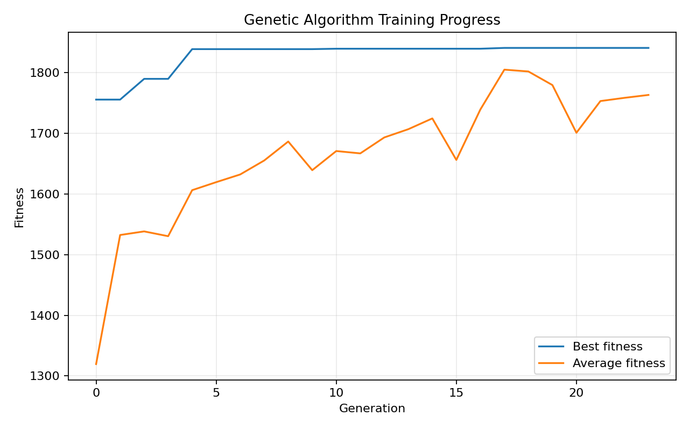
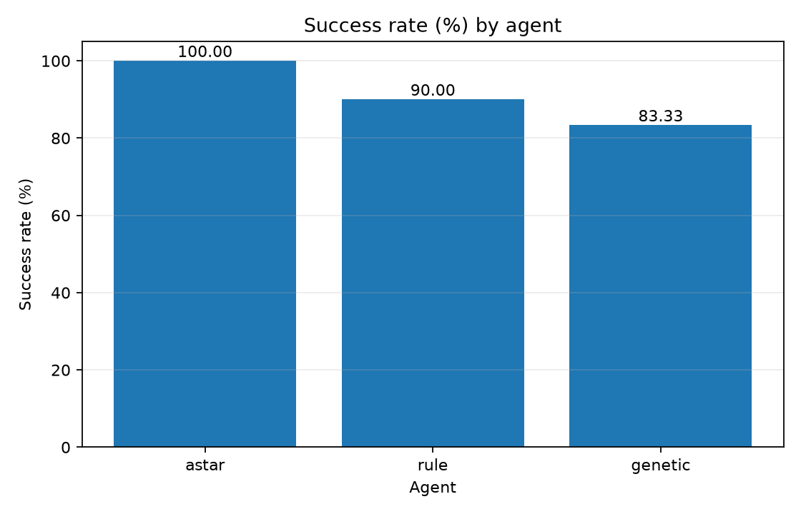
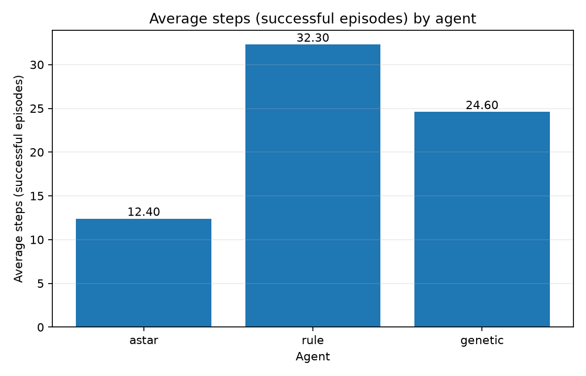
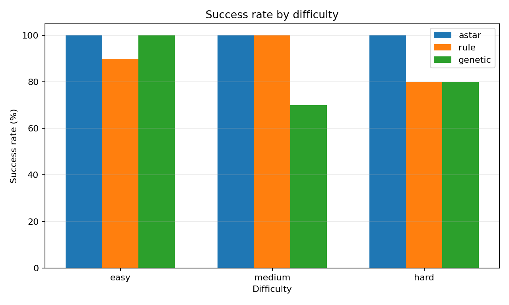
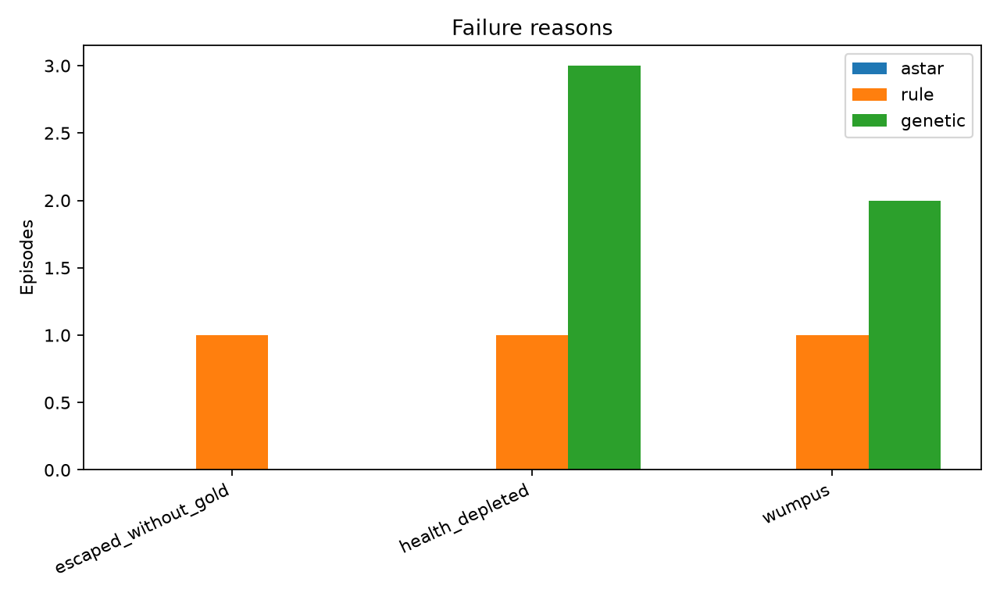

در این پروژه محیط Wumpus World روی گرید 8×8 پیادهسازی شد و سه روش متفاوت روی یک محیط و مجموعه معیار مشترک مقایسه شدند. A-Star به کل نقشه دسترسی دارد و نقش Oracle را ایفا میکند. عامل قاعدهمحور و عامل ژنتیکی ترکیبی فقط از ادراکهای محلی، حافظه و مختصات عمومی خروج استفاده میکنند. وزنهای روش ژنتیکی روی 12 نقشه آموزش تکامل یافتند و ارزیابی نهایی روی 30 نقشه تست جداگانه انجام شد.
عامل از خانه (1,1) شروع میکند، باید حداقل یک طلا جمعآوری کند و پیش از تمامشدن جان به خروج برسد. هر تلاش برای حرکت یک واحد جان کم میکند. دیوار حرکت را مسدود میکند، چاه پس از هزینه حرکت جان را نصف میکند، غول مرگ فوری ایجاد میکند و خروج بدون طلا شکست است.
parser، محیط، عاملها، پایگاه دانش، آموزش ژنتیک، مولد نقشه و benchmark در ماژولهای مستقل قرار گرفتهاند. تمام عاملها از تابع اجرای مشترک استفاده میکنند. در نسخه 8.1.0 ساختار پکیج با مسیرهای استاندارد، نصبپذیری، و دستورات یکپارچه CLI بهینهسازی شده است.
حالت جستوجو شامل موقعیت، جان باقیمانده و داشتن طلاست. دیوار و غول از فضای حالت حذف میشوند. ورود به چاه در صورت زندهماندن مجاز است، اما کاهش واقعی جان و جریمه چاه در هزینه مسیر لحاظ میشود. heuristic فاصله منهتن یک lower bound معتبر است.
این عامل از Breeze و Stench پایگاه دانش میسازد. نبود ادراک خطر، همسایهها را از همان خطر مبرا میکند. clause تکعضوی محل خطر قطعی را مشخص میکند. عامل خانه امن بازدیدنشده را ترجیح میدهد، در بنبست backtracking میکند و در نبود گزینه امن، کمخطرترین frontier را انتخاب میکند.
روش سوم یک عامل ترکیبی است. پایگاه دانش محلی شواهد خطر را فراهم میکند؛ یک سیاست خطی با 10 وزن تکاملیافته، حرکتهای مرحله اکتشاف را امتیازدهی میکند؛ و پس از گرفتن طلا، عامل از کوتاهترین مسیر شناختهشده امن به خروج بازمیگردد.
score(action) = Σ weight_i × feature_i(action)

30 نقشه تست دیدهنشده شامل 10 نقشه آسان، 10 متوسط و 10 سخت با seed ثابت تولید شدند. خروج، محل طلا و طول مسیرها متنوع است. جان اولیه همه سطوح برابر 120 است تا امتیاز بین دشواریها قابل مقایسه باشد. زمان اجرا median سه اجرای کامل است و تعداد حرکت موفق جداگانه گزارش میشود.
| Agent | Success | Score all | Steps all | Steps success | Health | Pit entries | Wumpus deaths |
|---|---|---|---|---|---|---|---|
| astar | 100.0% | 157.6 | 12.4 | 12.4 | 107.6 | 0.0 | 0 |
| rule | 90.0% | 117.93 | 32.9 | 32.3 | 73.93 | 0.267 | 1 |
| genetic | 83.33% | 120.97 | 31.8 | 24.6 | 75.63 | 0.133 | 2 |


A-Star به دلیل اطلاعات کامل و وجود حداقل یک مسیر امن، کران بالای عملکرد است. Rule-Based در میان عاملهای آنلاین نرخ موفقیت بالاتری دارد و محافظهکارتر است. Hybrid Genetic در اپیزودهای موفق حرکت کمتری مصرف میکند و امتیاز موفقیت بالاتری دارد، اما ریسک مرگ با غول بیشتر است. بنابراین نتیجه علمی، برتری مطلق یک روش نیست؛ بلکه تفاوت در trade-off میان اطمینان، توضیحپذیری و سرعت موفقیت است.


نسخه 8.1.0 یک pipeline قابلبازتولید از تولید نقشه و آموزش تا تست، ارزیابی و گزارش فراهم میکند. A-Star بهترین عملکرد را در محیط کاملاً شناختهشده دارد. در محیط ناشناخته، Rule-Based مطمئنتر و توضیحپذیرتر است، در حالی که Hybrid Genetic در موفقیتها کوتاهمسیرتر اما ریسکپذیرتر عمل میکند.